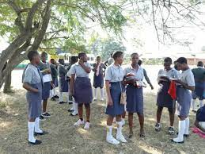

Overview of Ugandan Education
Uganda's education system follows a 7-6-3+ structure: 7 years of primary education, 6 years of secondary education (4 years O-Level, 2 years A-Level), and 3+ years of tertiary education. It’s rooted in the British colonial system, with English as the official medium of instruction since independence in 1962. The Ministry of Education and Sports oversees policy, while the National Curriculum Development Centre (NCDC) designs curricula.
Key Facts
- Enrollment: Over 8 million primary students (2023).
- Literacy Rate: 76.5% (2022, UNESCO).
- Universal Secondary Education (USE) introduced in 2007.
- Rural-urban disparity remains a challenge.
Primary Curriculum
The primary cycle (P1-P7) aims to build foundational skills in literacy, numeracy, and civic awareness. Subjects include English, Mathematics, Science, Social Studies, Religious Education, Creative Arts, Physical Education, and local languages (e.g., Luganda, Acholi) up to P3. The curriculum emphasizes thematic learning to integrate knowledge across disciplines.
Curriculum Details
- Weekly Hours: 35-40 lessons (40 minutes each).
- Focus: Child-centered learning, practical activities.
- Challenges: Overcrowded classrooms (average 60:1 ratio), teacher shortages.
Post-COVID, an abridged curriculum was introduced in 2022 to recover lost time, prioritizing core competencies over breadth.
Secondary Curriculum

Secondary education is split into Lower Secondary (S1-S4) and Upper Secondary (S5-S6). The 2020 reform introduced a competency-based Lower Secondary curriculum, reducing subjects from 43 to 21 to focus on practical skills and reduce student overload.
Lower Secondary (O-Level)
- S1-S2: 12 subjects (e.g., English, Math, Physics, Biology, Kiswahili).
- S3-S4: 8-9 subjects, including electives like Agriculture or Fine Art.
- Assessment: Uganda Certificate of Education (UCE) exams.
Upper Secondary (A-Level)
- Students choose 3 principal subjects (e.g., PCB - Physics, Chemistry, Biology) + General Paper.
- Focus: Specialization for tertiary education.
- Exams: Uganda Advanced Certificate of Education (UACE).
Vocational options like Technical Drawing and Entrepreneurship are integrated to enhance employability.
Tertiary Education

Tertiary education encompasses universities, polytechnics, and teacher training colleges. Makerere University, Kyambogo University, and Mbarara University of Science and Technology are leading public institutions. Private universities like Uganda Christian University also thrive.
Structure & Options
- Degrees: 3-5 years (e.g., Medicine: 5 years).
- Diplomas/Certificates: 1-2 years via UVQF.
- Enrollment: ~150,000 students annually, with only 40% of UACE qualifiers admitted.
Technical and Vocational Education and Training (TVET) programs focus on skills like plumbing, carpentry, and ICT, aligning with Uganda’s Vision 2040 for industrialization.
Recent Curriculum Updates
The 2020 Lower Secondary reform marked a shift to a competency-based approach, emphasizing skills over rote learning. Kiswahili became compulsory to promote East African integration, alongside Physical Education and Entrepreneurship.
1997: Universal Primary Education (UPE)
Free education doubled enrollment to 5.3 million by 1998.
2007: Universal Secondary Education (USE)
Extended free education to secondary level, targeting disadvantaged students.
2020: Competency-Based Curriculum
Cut subjects, introduced project-based learning, and added 20% formative assessment.
2022: Abridged Curriculum
Condensed syllabus to recover COVID-19 learning losses, focusing on essentials.
2023: Digital Learning Push
Pilot programs for ICT integration in rural schools launched.
Assessment System
Uganda’s assessment is managed by the Uganda National Examinations Board (UNEB). Exams are rigorous, with results determining progression and opportunities.
Primary Leaving Examination (PLE)
- Subjects: English, Math, Science, Social Studies.
- Grading: Division 1 (best) to 4, or Ungraded.
- 2022 Pass Rate: 88%.
UCE & UACE
- UCE: Aggregate scores from 8 best subjects (Distinction 1 to Failure 9).
- UACE: Points system (A=6, B=5, etc.) for university entry.
- Continuous Assessment introduced in 2020 (20% weighting).
Critics argue the system favors urban students, prompting calls for equitable resource distribution.